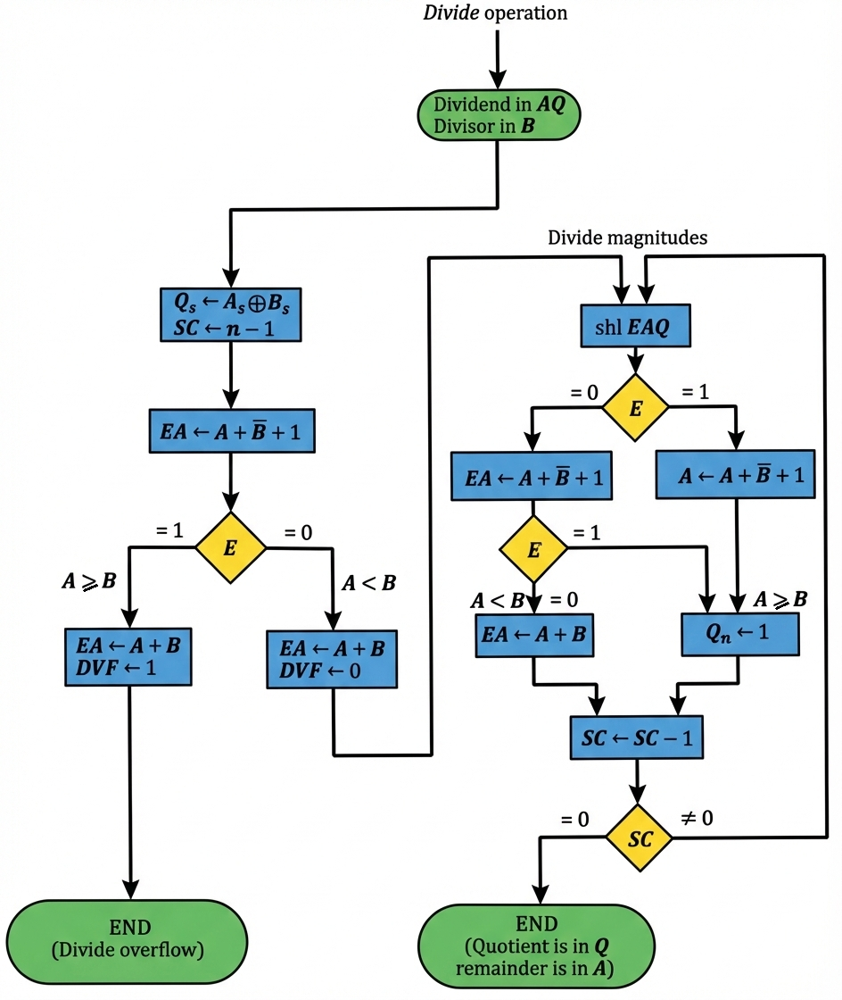

Understanding Hardware Implementation of Binary Division
Division is one of the fundamental arithmetic operations in digital systems. Unlike addition and subtraction, division is more complex and requires multiple iterative steps to complete. This section explores how binary division is implemented in digital hardware.
Binary division follows a similar process to decimal long division, but operates on binary digits. The basic steps involve:
Divisor: 11010 Quotient = Q
B = 10001 ⟌0111000000 Dividend = A
01110 5 bits of A < B, quotient has 5 bits
011100 6 bits of A > B
-10001 Shift right B and subtract; enter 1 in Q
-------
-010110 7 bits of remainder > B
--10001 Shift right B and subtract; enter 1 in Q
-------
--00101 Remainder < B; enter 0 in Q; shift right B
---01010 Remainder > B
----10001 Shift right B and subtract; enter 1 in Q
---------
----00110 Remainder < B; enter 0 in Q
-----00110 Final remainder
This example shows dividing 0111000000 by 10001, resulting in quotient 11010 and remainder 00110
Enter decimal numbers to see the division process
The hardware implementation of division for signed-magnitude data uses a restoring division algorithm. This approach uses dedicated registers and performs iterative shifts and subtractions.
Divisor B = 10001, B̄ + 1 = 01111
E A Q SC
Dividend: 01110 00000 5
shl EAQ 0 11100 00000
add B̄ + 1 01111 00000
-----
E = 1 1 01011
Set Qn = 1 1 01011 00001 4
shl EAQ 0 10110 00010
Add B̄ + 1 01111
-----
E = 1 1 00101
Set Qn = 1 1 00101 00011 3
shl EAQ 0 01010 00110
Add B̄ + 1 01111
-----
0 11001 00110 E = 0; leave Qn = 0
Add B 10001
-----
1 01010 2 Restore remainder
shl EAQ 0 10100 01100
Add B̄ + 1 01111
-----
E = 1 1 00011
Set Qn = 1 1 00011 01101 1
shl EAQ 0 00110 11010
Add B̄ + 1 01111
-----
0 10101 11010 E = 0; leave Qn = 0
Add B 10001 0
-----
1 00110 11010 Restore remainder
Neglect E
Remainder in A: 00110
Quotient in Q: 11010
Detailed step-by-step hardware execution showing register operations
Divide overflow occurs when the quotient exceeds the capacity of the register allocated to hold it. This is a critical condition that must be detected before performing the division operation.
Overflow occurs when:
Before starting the division process, the hardware performs an overflow check:
Consider a 5-bit quotient register:
When overflow is detected, the system typically:
The complete hardware algorithm for binary division follows a structured flowchart that guides the sequential operations of the division unit.

The "Divide Magnitudes" section expands into the following iterative process:
For an n-bit division operation:
Beyond the restoring division algorithm, several alternative approaches exist for implementing division in hardware, each with unique trade-offs.
Key Improvement: Eliminates the restoration step, making the algorithm faster.
Instead of restoring the remainder after a negative result, the algorithm alternates between addition and subtraction based on the sign of the previous result.
Advantage: Saves one clock cycle per iteration when restoration would be needed
Disadvantage: Slightly more complex control logic
Handles signed numbers directly without converting to magnitude form:
Rule: Sign of quotient = (sign of dividend) XOR (sign of divisor)
Rule: Sign of remainder = sign of dividend
Named after: Sweeney, Robertson, and Tocher
Uses a redundant number representation allowing quotient digits of {-1, 0, 1}:
Iterative Approximation Method:
Computes 1/B using Newton-Raphson iteration, then multiplies by A:
| Algorithm | Speed | Hardware Cost | Best Use Case |
|---|---|---|---|
| Restoring | O(n) cycles | Low | Simple microcontrollers |
| Non-Restoring | O(n) cycles (faster) | Low-Medium | General purpose CPUs |
| SRT | O(n) cycles (efficient) | Medium | High-speed processors |
| Array Divider | O(1) cycle | Very High | Specialized applications |
| Newton-Raphson | O(log n) iterations | High | Floating-point units |
| Goldschmidt | O(log n) iterations | High | Pipelined FPUs |
Design Considerations:
Contemporary processors often use hybrid approaches:
The infamous Pentium FDIV bug (1994) was caused by an error in the lookup table used for SRT division. Five entries out of 1066 were incorrect, leading to rare but significant floating-point division errors. This incident cost Intel $475 million and highlighted the critical importance of verification in division hardware.